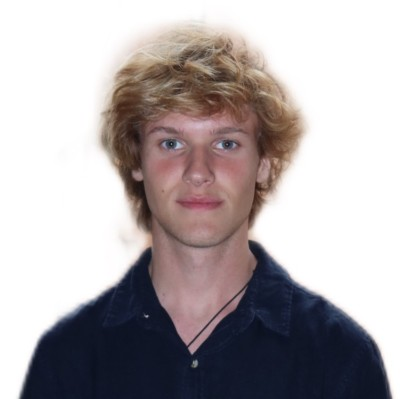

QA Analyst & Developer
Estudante de Sistemas de Informação na UFSC, atuando como
Analista de QA em sistemas críticos. Trabalho com testes
automatizados e manuais, validação de regras de negócio, análise de bugs
e leitura de logs para identificação de causas raiz, usando bastante
Playwright no processo.
Tenho background em desenvolvimento com Python, C#, JavaScript e
React, o que me permite entender o software como um todo e colaborar
de forma mais próxima com os times de dev.
Labtrans / UFSC
Testes automatizados com Playwright, análise e documentação de bugs, validação de regras de negócio e leitura de logs para identificação de causas raiz em sistemas críticos. Colaboração próxima com times de desenvolvimento.
Sistema de Estoque GitHub ↗
Aplicação web full-stack para gerenciamento de estoque e análise financeira, com rastreamento de validade e métricas em tempo real.
Next.js · TypeScript
Sistema CaFerri GitHub ↗
Sistema de gerenciamento completo para um e-commerce de café especializado, desenvolvido em Python com arquitetura MVC.
Python · MVC
Bacharelado em Sistemas de Informação · Florianópolis, SC
Estudante de Sistemas de Informação na UFSC, com foco em desenvolvimento de software, análise de dados e sistemas críticos.
Immersão Cultural e Idiomática · França
Imersão cultural profunda resultando em fluência total no idioma Francês, além do aprimoramento de adaptabilidade global e resolução de problemas.